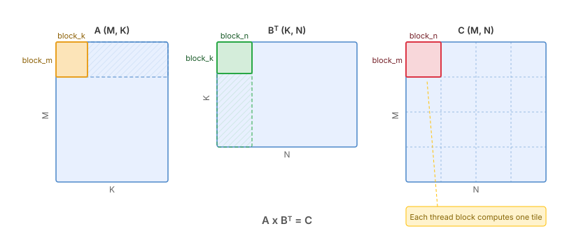
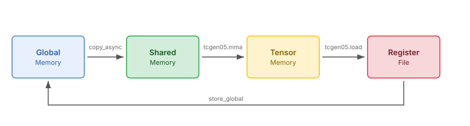
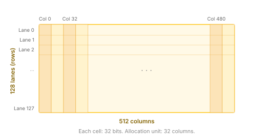

0. A Minimal Blackwell Matmul¶
This first version implements a minimal but correct matrix multiplication kernel on Blackwell GPUs. It introduces three key Blackwell features: Tensor Memory (tcgen05), 5th-generation Tensor Cores, and asynchronous barriers (mbarrier).
The kernel is not yet fast — we will optimize it step by step in later versions — but it establishes the foundation for everything that follows.
The Full Kernel¶
Before diving into the details, here is the complete kernel so you can see the big picture. We will explain each part in the sections that follow.
@tilus.autotune("block_m, block_n", [[128, 64], [128, 128], [128, 256]])
@tilus.autotune("block_k", [16, 32, 64])
class BlackwellMatmulV0(tilus.Script):
def __init__(self, block_m: int, block_n: int, block_k: int):
super().__init__()
self.block_m = block_m
self.block_n = block_n
self.block_k = block_k
def __call__(
self,
m_size: int32,
n_size: int,
k_size: int,
a_ptr: ~float16,
b_ptr: ~float16,
c_ptr: ~float16,
):
self.attrs.blocks = [cdiv(m_size, self.block_m), cdiv(n_size, self.block_n)]
self.attrs.warps = 4
offset_m: int32 = self.block_m * self.blockIdx.x
offset_n: int32 = self.block_n * self.blockIdx.y
g_a = self.global_view(a_ptr, dtype=float16, shape=[m_size, k_size])
g_b = self.global_view(b_ptr, dtype=float16, shape=[n_size, k_size])
s_a = self.shared_tensor(dtype=float16, shape=[self.block_m, self.block_k])
s_b = self.shared_tensor(dtype=float16, shape=[self.block_n, self.block_k])
# allocate a tensor in tensor memory (tmem)
t_acc = self.tcgen05.alloc(dtype=float32, shape=[self.block_m, self.block_n])
# allocate one barrier in shared memory
mbarriers = self.mbarrier.alloc(counts=[1])
# use a phase to record the current phase of the barrier
phase: uint32 = 0
self.sync()
for offset_k in range(0, k_size, self.block_k):
self.copy_async(src=g_a, dst=s_a, offsets=[offset_m, offset_k])
self.copy_async(src=g_b, dst=s_b, offsets=[offset_n, offset_k])
self.copy_async_wait_all()
self.sync()
with self.single_warp():
self.tcgen05.mma(
s_a, s_b.transpose(), t_acc, enable_input_d=offset_k != 0
)
self.tcgen05.commit(mbarrier=mbarriers[0])
self.mbarrier.wait(mbarriers[0], phase=phase)
self.sync()
phase ^= 1
# load the result from tensor memory to register
r_acc = self.tcgen05.load(t_acc)
g_c = self.global_view(c_ptr, dtype=float16, shape=[m_size, n_size])
self.store_global(g_c, r_acc.to(float16), offsets=[offset_m, offset_n])
# all allocated tensor memory must be deallocated
self.sync()
self.tcgen05.dealloc(t_acc)
Block Tiling¶
We compute \(C = A \times B^T\) where A is (M, K) and B is (N, K). The output matrix C is (M, N).
Each thread block is responsible for computing one block_m x block_n tile of
C. The K dimension is iterated in chunks of block_k.
{kind=link}

Block tiling of the matmul. Each thread block computes one output tile. The hatched regions show the full slices of A and BT that participate in computing the highlighted C tile.¶
// remove the x and = in the figure, instead, adding A x B^T = C at the bottom (centered).
Data Flow¶
The kernel moves data through four memory levels:
{kind=link}

Data flow in the kernel: Global Memory → Shared Memory → Tensor Memory → Registers → Global Memory.¶
Global → Shared:
copy_async()loads tiles of A and B from global memory into shared memory asynchronously. This uses the legacy async copy mechanism (Ampere-era); we will replace it with the hardware TMA engine in the next version.Shared → Tensor Memory:
tcgen05.mmareads operands from shared memory and accumulates the result in tensor memory.Tensor Memory → Register:
tcgen05.loadmoves the accumulated result from tensor memory to registers.Register → Global:
store_global()writes the final result back to global memory.
Tensor Memory (TMEM)¶
Tensor Memory is a new memory space introduced on Blackwell (sm_100), private to the SM’s tensor cores. It acts as a high-bandwidth accumulator for MMA operations, avoiding the need to hold large accumulator tiles in registers.
Tensor Memory is organized as a 2D structure of 128 lanes (rows) and 512 columns per CTA, with each cell being 32 bits. Memory is allocated in units of 32 columns.
{kind=link}

Tensor Memory layout: 128 lanes x 512 columns, each cell 32 bits.¶
In tilus, the lifecycle of a tensor memory allocation is:
tcgen05.alloc— allocate aTMemoryTensorin tensor memory.tcgen05.mma— use it as the accumulator in MMA operations.tcgen05.load— read the result out to aRegisterTensor.tcgen05.dealloc— free the allocation (required before the kernel exits).
For more details, see Script.tcgen05 and Tensor Memory Tensor.
Asynchronous Barriers (mbarrier)¶
On Blackwell, many operations are asynchronous — an instruction can be issued and completed later. We need a way to know when an async operation has finished. This is the role of the mbarrier (memory barrier).
An mbarrier tracks completion through a phase that flips between 0 and 1:
mbarrier.wait(barrier, phase=p)blocks until the barrier’s current phase differs fromp, meaning the tracked operations have completed.After each wait, the caller flips its local phase (
phase ^= 1) to prepare for the next round.
In this kernel, we use an mbarrier to track when
tcgen05.mma
+
tcgen05.commit
have finished writing to tensor memory.
For more details, see Script.mbarrier.
Data Layout: K-major¶
Blackwell tensor cores
(tcgen05.mma)
expect operands in shared memory in
one of two layouts: MN-major or K-major. In this tutorial, we use
K-major, meaning the K dimension is contiguous in memory.
Since we store both A and B as K-major:
A has shape
[M, K]— K is already the last (contiguous) dimension.B has shape
[N, K]— also K-major.
However, tcgen05.mma computes \(D = A \times B\) and expects logical
shapes [M, K] and [K, N]. Since our B is [N, K], we call
s_b.transpose() to present it as [K, N]. This is a view operation
that reinterprets the layout without copying data.
Thread Groups¶
By default, every instruction in tilus specifies a cooperative execution by the entire thread block, similar to Triton. However, efficient matrix multiplication kernels on Hopper and Blackwell architectures require different warps to perform different jobs and collaborate with each other asynchronously. To assign different sub-programs to different warps, tilus introduces thread groups.
A thread group selects a subset of threads within the block using
thread_group(). For example:
with self.thread_group(thread_begin=0, num_threads=32):
# Only threads 0-31 (one warp) execute this
...
with self.thread_group(thread_begin=32, num_threads=32):
# Only threads 32-63 execute this
...
Tilus also provides shortcuts for common patterns:
single_thread() for one thread,
single_warp() for one warp (32 threads), and
warp_group() for multiple warps.
In this kernel, Blackwell tensor core instructions
(tcgen05.mma,
tcgen05.commit)
are warp-cooperative — they must be issued by exactly one warp.
We use single_warp() to express this:
with self.single_warp():
self.tcgen05.mma(
s_a, s_b.transpose(), t_acc, enable_input_d=offset_k != 0
)
self.tcgen05.commit(mbarrier=mbarriers[0])
self.mbarrier.wait(mbarriers[0], phase=phase)
For more details, see Thread Group.
Walkthrough¶
With the key Blackwell features covered above — tensor memory, asynchronous barriers, K-major data layout, and thread groups — let us now walk through the kernel code in detail.
A tilus kernel is defined as a subclass of Script. The
__init__ method stores compile-time hyperparameters (tile sizes), and
__call__ describes the kernel logic. For more on the script structure, see
Tilus Script.
Kernel Setup¶
self.attrs.blocks = [cdiv(m_size, self.block_m), cdiv(n_size, self.block_n)]
self.attrs.warps = 4
offset_m: int32 = self.block_m * self.blockIdx.x
offset_n: int32 = self.block_n * self.blockIdx.y
g_a = self.global_view(a_ptr, dtype=float16, shape=[m_size, k_size])
g_b = self.global_view(b_ptr, dtype=float16, shape=[n_size, k_size])
s_a = self.shared_tensor(dtype=float16, shape=[self.block_m, self.block_k])
s_b = self.shared_tensor(dtype=float16, shape=[self.block_n, self.block_k])
# allocate a tensor in tensor memory (tmem)
t_acc = self.tcgen05.alloc(dtype=float32, shape=[self.block_m, self.block_n])
# allocate one barrier in shared memory
mbarriers = self.mbarrier.alloc(counts=[1])
# use a phase to record the current phase of the barrier
phase: uint32 = 0
self.sync()
self.attrs.blockssets the grid dimensions —ceil(M / block_m) x ceil(N / block_n)thread blocks.self.attrs.warpssets the number of warps per block (4 warps = 128 threads).offset_mandoffset_nare the output tile offsets, computed from the block index (blockIdx).global_view()interprets the raw pointers as 2D tensors with the given dtype and shape.shared_tensor()allocates shared memory tiles for staging A and B data.tcgen05.allocallocates the tensor memory accumulator.mbarrier.allocallocates one mbarrier with an expected arrival count of 1.The phase variable is initialized for mbarrier tracking, and
sync()ensures all setup is complete before the main loop.
Main Loop¶
for offset_k in range(0, k_size, self.block_k):
self.copy_async(src=g_a, dst=s_a, offsets=[offset_m, offset_k])
self.copy_async(src=g_b, dst=s_b, offsets=[offset_n, offset_k])
self.copy_async_wait_all()
self.sync()
with self.single_warp():
self.tcgen05.mma(
s_a, s_b.transpose(), t_acc, enable_input_d=offset_k != 0
)
self.tcgen05.commit(mbarrier=mbarriers[0])
self.mbarrier.wait(mbarriers[0], phase=phase)
self.sync()
phase ^= 1
In each iteration:
copy_async()loads ablock_m x block_ktile of A and ablock_n x block_ktile of B from global to shared memory.copy_async_wait_all()waits for all outstanding copies, andsync()ensures all threads see the data.Within
single_warp(),tcgen05.mmamultiplies the two tiles and accumulates into tensor memory.enable_input_d=offset_k != 0means the first iteration computes \(D = A \times B\), and subsequent iterations compute \(D = A \times B + D\).tcgen05.commitsignals the mbarrier that the MMA has been submitted.mbarrier.waitblocks until the MMA completes.phase ^= 1prepares for the next mbarrier cycle.
Epilogue¶
# load the result from tensor memory to register
r_acc = self.tcgen05.load(t_acc)
g_c = self.global_view(c_ptr, dtype=float16, shape=[m_size, n_size])
self.store_global(g_c, r_acc.to(float16), offsets=[offset_m, offset_n])
# all allocated tensor memory must be deallocated
self.sync()
self.tcgen05.dealloc(t_acc)
After the loop, we load the accumulator from tensor memory to registers via
tcgen05.load,
cast to float16, and write to global memory via
store_global(). Finally, we deallocate the tensor memory
with tcgen05.dealloc.
Running the Kernel¶
def main(bench=True):
matmul = BlackwellMatmulV0()
headers = ["m", "n", "k", "name", "latency (ms)", "tflops"]
rows = []
for m_size, n_size, k_size in [
[8192, 8192, 8192],
]:
print(f"Running with m_size={m_size}, n_size={n_size}, k_size={k_size}")
a = torch.randn(m_size, k_size, dtype=torch.float16, device="cuda")
b = torch.randn(n_size, k_size, dtype=torch.float16, device="cuda")
c = torch.empty(m_size, n_size, dtype=torch.float16, device="cuda")
c_ref = a @ b.T
torch.cuda.synchronize()
matmul(m_size, n_size, k_size, a, b, c)
torch.cuda.synchronize()
torch.testing.assert_close(c, c_ref, atol=1e-2, rtol=1e-2)
# benchmark
if bench:
for name, func in [
("torch", lambda: a @ b.T),
("tilus", lambda: matmul(m_size, n_size, k_size, a, b, c)),
]:
latency = benchmark_func(func, warmup=5, repeat=100)
tflops = 2 * m_size * n_size * k_size / latency * 1e-9
rows.append([m_size, n_size, k_size, name, latency, tflops])
if bench:
df = pandas.DataFrame(rows, columns=headers)
print(df)
if __name__ == "__main__":
main(bench=True)
# tilus.utils.ncu_run(main, bench=False, kernel_regex="tilus|nvjet")
What’s Next¶
This kernel works but is far from optimal. The main bottleneck is the
load path: copy_async() uses the legacy async copy
mechanism, which requires all threads to participate and does not leverage
the hardware’s Tensor Memory Access (TMA) engine.
In the next version, we replace copy_async with
TMA loads, which offload address generation and data movement to a dedicated
hardware unit, freeing up warps for computation.
Full Source¶
The complete example file is located at
examples/blackwell_matmul/matmul_v0.py.